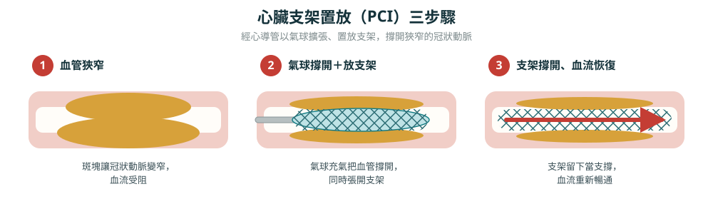

什麼是心臟支架？
心臟支架（冠狀動脈支架，coronary stent）是一個細小的金屬網管，用來把狹窄或阻塞的冠狀動脈撐開、維持血流暢通。當供應心臟肌肉的冠狀動脈因為動脈硬化斑塊而變窄，血流減少就會造成胸悶、心絞痛，嚴重時甚至心肌梗塞。醫師會透過氣球把狹窄處撐開，再放上支架當作「支撐架」，避免血管回彈塌陷。
為什麼需要放支架？
- 急性心肌梗塞：血管突然被血栓完全塞住，需要盡快打通、放支架，這是在救命，時間就是心肌。
- 不穩定型心絞痛：症狀惡化、藥物壓不住，血管嚴重狹窄。
- 穩定型冠心病：症狀明顯影響生活、或檢查顯示狹窄嚴重且會造成心肌缺血時，會考慮放支架改善症狀。這類情況也可以先用藥物治療，是否放支架應與醫師討論。
支架是怎麼放進去的？
- 局部麻醉後，從手腕（橈動脈）或鼠蹊部（股動脈）的血管插入細導管。
- 導管沿血管推進到心臟的冠狀動脈，注入顯影劑找出狹窄位置。
- 把前端帶有氣球與支架的導管送到狹窄處，充氣撐開血管、同時把支架撐開貼緊血管壁。
- 洩氣、取出氣球，支架則永久留在原處（可吸收支架則會逐漸被吸收）撐住血管。
- 整個過程病人保持清醒，通常僅感到壓迫而非疼痛。

心臟支架有哪幾種？
目前臨床上主要有三種支架，各有取捨，沒有絕對「最好」，只有「最適合你」：
放完支架最重要的事：抗血小板藥物（DAPT）
支架剛放進去、血管內皮還沒把它包覆好之前，表面容易形成血栓。因此放支架後需要一段時間的雙抗血小板治療（DAPT）——通常是阿斯匹靈搭配另一種抗血小板藥物（如 clopidogrel、ticagrelor 或 prasugrel）。
- 穩定型冠心病放塗藥支架後，雙抗血小板藥大約吃 6 個月。
- 急性冠心症（如心肌梗塞）通常約 12 個月。
- 有出血風險者醫師可能縮短，血栓風險高者可能延長——實際長度由醫師個別評估。
- 雙抗療程結束後，大多需要長期（常是終身）服用一種抗血小板藥物（多為阿斯匹靈）。
支架會不會再塞住？
放了支架不代表一勞永逸，主要有兩種需要注意的情況：
- 再狹窄（in-stent restenosis）：血管內組織增生讓管腔再度變窄，通常發生在數個月至一兩年內。塗藥支架的機率已明顯低於傳統裸金屬支架。
- 支架內血栓（stent thrombosis）：支架表面突然形成血栓，較少見但很危急，多與過早停用抗血小板藥有關。
術後生活與追蹤
- 依醫囑規律服用所有藥物，尤其抗血小板藥與降膽固醇的他汀類藥物。
- 控制危險因子：血壓、血糖、血脂達標，戒菸、健康飲食、規律運動、維持理想體重。
- 按時回診，讓醫師評估症狀與藥物調整。
- 穿刺部位依進入位置（手腕或鼠蹊部）短期內避免劇烈運動與負重，聽從醫療團隊指示。
- 裝了現代支架可以安全接受磁振造影（MRI），不會因磁力移位。
常見問答
心臟支架費用大概多少？健保有給付嗎？
費用依支架種類差很多：
- 健保支架（裸金屬支架）：健保全額給付，不需自費。
- 塗藥支架：採健保自付差額，扣掉健保給付後每支大約還要 5～7 萬元（依支架長度、大小而不同），而且有時一次手術會用到不只一支。
- 可吸收支架：通常需全額自費，每支約 13～15 萬元。
心臟支架可以用多久？需要更換嗎？
金屬支架（裸金屬與塗藥支架）是永久性的，放進去後會被血管內皮包覆、固定在原處，正常情況下不會壞掉、也不需要更換。真正的關鍵不是支架本身能撐多久，而是有沒有好好保養血管。可吸收支架則設計成幾年後被身體分解、完全消失。
放支架後藥要吃多久？可以自己停嗎？
穩定型冠心病放塗藥支架後雙抗血小板藥大約 6 個月，急性冠心症約 12 個月，實際由醫師個別評估，之後多需長期服用一種抗血小板藥。療程內絕對不可自行停藥，擅自停藥可能引發致命的支架內血栓；若因手術需停藥，務必先問過心臟科醫師。
裝了心臟支架，可以做 MRI 嗎？
可以。現代冠狀動脈支架幾乎都是非磁性材質，接受 MRI 是安全的，不會因磁力移位或發熱。檢查前仍建議告知放射科人員你裝有支架，並可提供支架的產品資料卡確認。
支架會不會移位或掉出來？
不會。支架植入後短短幾週內就會被血管內皮覆蓋、牢牢固定。需要注意的是「再狹窄」與「支架內血栓」，而不是移位——而這兩者靠規律服藥與控制危險因子就能大幅降低。
放了支架就等於根治了嗎？
不是。支架只處理了「這一段」血管，並不能阻止其他部位或未來再形成新的斑塊。放支架後仍需長期服藥、控制三高、戒菸與規律運動，才能真正降低再發作風險。支架是治療的一部分，不是終點。